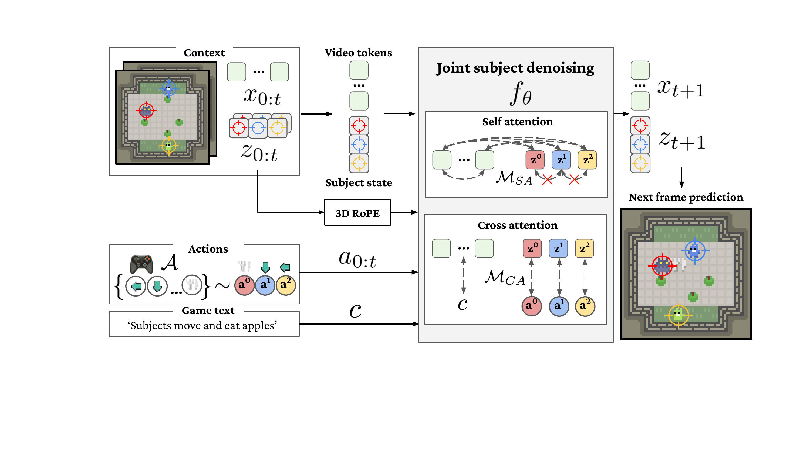
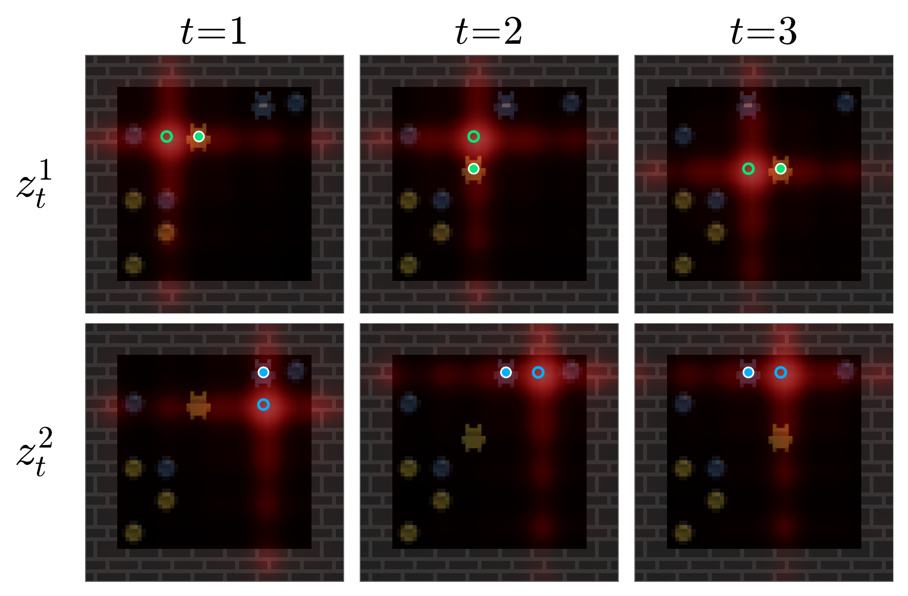
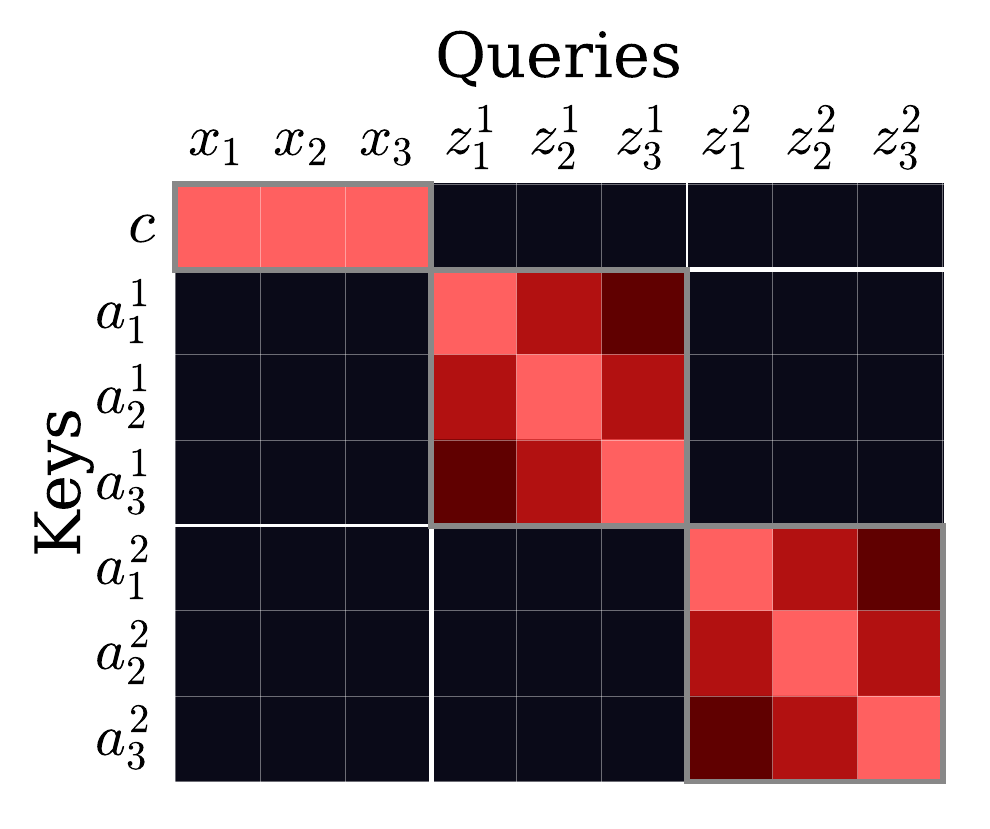

Recent advances in video diffusion have enabled the development of “world models” capable of simulating interactive environments. However, these models are largely restricted to single-agent settings, failing to control multiple agents simultaneously in a scene.
In this work, we tackle a fundamental issue of action binding in existing video diffusion models, which struggle to associate specific actions with their corresponding subjects. We propose ActionParty, an action-controllable multi-subject world model for generative video games. It introduces subject state tokens, i.e. latent variables that persistently capture the state of each subject in the scene. By jointly modeling state tokens and video latents with a spatial biasing mechanism, we disentangle global video frame rendering from individual action-controlled subject updates.
We evaluate ActionParty on the Melting Pot benchmark, demonstrating the first video world model capable of controlling up to seven players simultaneously across 46 diverse environments. Our results show significant improvements in action-following accuracy and identity consistency, while enabling robust autoregressive tracking of subjects through complex interactions. See more examples for generations across all 46 games.
ActionParty operates as a generative game engine, jointly modeling video frames and the state of each subject. Given an initial frame and per-player action sequences, it autoregressively generates future game states entirely through learned video diffusion. Each player is independently controlled: per-step actions are shown as icons, orientation cones indicate detected facing direction, and green/red borders denote whether each action was correctly executed. Generations across all 46 environments with baseline comparisons are available in the full results gallery.
Coins (2 players), step-by-step generation with action annotations.
Cooking: Asymmetric (2 players)
Clean Up (4 players)
Coop Mining (4 players)
See more examples for all 46 games with seed variations and baseline comparisons.
ActionParty operates as a generative game engine, jointly modeling subject state tokens and video latents. Given context frames, per-subject state tokens, and per-subject actions, the Diffusion Transformer (DiT) denoises the next frame while simultaneously predicting updated subject coordinates. Attention masking enforces action-subject correspondence, enabling consistent multi-subject action control in a single forward pass.

Video tokens and subject state tokens are concatenated and processed through a DiT with 3D RoPE for spatial binding and attention masking for action isolation.
The core challenge in multi-subject control is ensuring each player's actions only affect that player, not others. We solve this with two complementary mechanisms:

(a) Self-attention: 3D RoPE biases each subject state token to the spatial location of its corresponding subject in the video.

(b) Cross-attention: Masks ensure each subject state token only attends to its own actions. Text attends to video tokens.
Together, RoPE spatial biasing anchors subject state to specific spatial coordinates within the video, while attention masking isolates action-to-subject correspondence, even when subjects are visually identical. This enables ActionParty to scale to seven simultaneous players, enabling reliable subject localization and consistent action binding.
ActionParty builds on recent progress in video diffusion and world models. Genie and GameNGen demonstrate video generation as world models for single-agent game environments. Wan2.1 is the open-source DiT backbone that ActionParty fine-tunes from. The Melting Pot benchmark provides the 46 multi-agent game environments used for training and evaluation.
Recent concurrent work on multi-player world models, including Multiverse, Solaris, and MultiGen, generates separate first-person views for each player. MultiGen also predicts explicit state, with one action targeting each player's video stream. In contrast, ActionParty controls multiple subjects within the same shared video frame, directly tackling the action binding problem in world models.
@inproceedings{pondaven2026actionparty,
title={ActionParty: Multi-Subject Action Binding in Generative Video Games},
author={Alexander Pondaven and Ziyi Wu and Igor Gilitschenski and Philip Torr and Sergey Tulyakov and Fabio Pizzati and Aliaksandr Siarohin},
booktitle={ECCV},
year={2026}
}